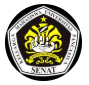
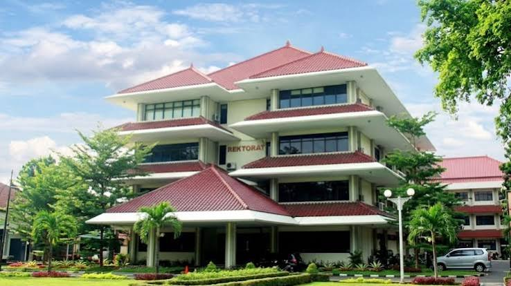

Badan Eksekutif Mahasiswa — Mewujudkan Mahasiswa Berintegritas, Kreatif, dan Inovatif

BEM di Universitas Pancasila secara resmi dinamakan Senat Keluarga Mahasiswa Universitas Pancasila (Senat KMUP). Meskipun mahasiswa dari luar kampus sering menyebutnya sebagai "BEM Universitas", kampus ini tetap menggunakan nama resmi Senat KMUP karena menerapkan sistem Keluarga Mahasiswa (KM) sejak berdiri pada 12 Agustus 1984.

Berikut adalah urutan program unggulan BEM UP:
Email: senat.up@univpancasila.ac.id
Website Resmi: senat-kmup
Media Sosial: Instagram